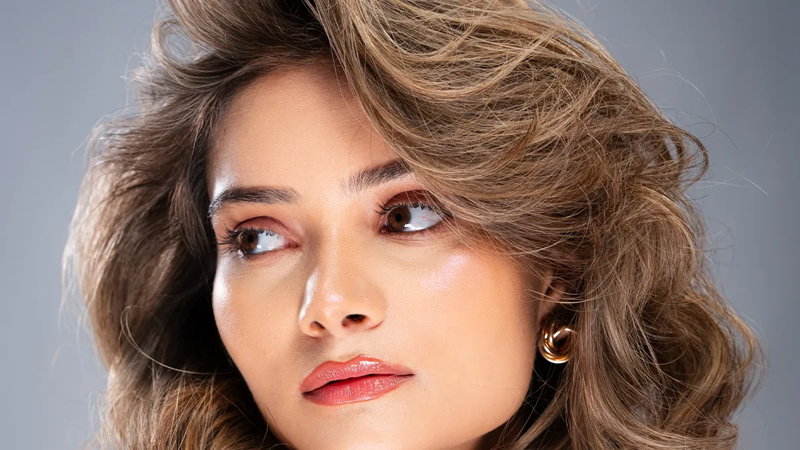

Grey hair is a natural part of ageing, but not everyone prefers a fully covered, uniform hair colour. Grey hair blending offers a softer alternative by combining grey strands with carefully selected shades to create a more balanced and natural-looking appearance. If you are exploring grey hair blending in Vadodara, the right colouring technique can help reduce the contrast between grey and naturally pigmented hair without requiring complete coverage.
The best approach depends on the percentage of grey hair, your natural hair colour, desired finish, and maintenance preferences.
Grey hair blending is a hair colouring approach that softens the contrast between grey strands and natural hair colour. Instead of colouring every strand with one uniform shade, a stylist uses techniques such as highlights, lowlights, babylights, or toning to create a more seamless appearance.
This approach works particularly well for people who want to incorporate their grey hair into an overall colour design rather than completely hide it.
Common characteristics of grey hair blending include:
Different colouring techniques can help reduce the visibility of grey strands. The right choice depends on how much grey hair you have and the appearance you want.
Highlights introduce lighter strands throughout the hair to reduce the contrast between grey and darker sections. They can be particularly useful when grey hair is scattered across different areas.
Fine highlights can create a subtle, blended appearance, while brighter sections offer more noticeable dimension.
Lowlights involve adding darker shades to selected hair sections. They help restore depth and create contrast in hair that has become predominantly grey or appears too light.
For people with naturally brown hair, carefully selected brown lowlights can create a more balanced colour result.
Babylights are very fine highlights distributed throughout the hair. Because the sections are smaller, they can create delicate colour transitions without making the result look overly highlighted.
They are worth considering if you prefer a subtle finish.
Toners help adjust the overall appearance of hair colour by refining unwanted undertones or creating a more balanced shade. They may be used alongside highlights or other colouring techniques to achieve a cohesive finish.
A stylist can recommend an appropriate toner based on your existing colour and desired result.
The amount of grey hair and your preferred appearance are important factors when selecting a colouring method.
| Grey Hair Level | Suitable Colouring Approach | Desired Appearance |
|---|---|---|
| A few grey strands | Fine highlights | Subtle blending |
| Scattered grey hair | Highlights or babylights | Balanced dimension |
| Moderate grey coverage | Highlights with lowlights | Natural-looking contrast |
| Predominantly grey hair | Tonal blending or lowlights | Softer overall colour |
| Transitioning to natural grey | Silver or grey blending | Gradual grey integration |
These are general starting points rather than fixed rules. Your stylist should assess your natural hair shade, grey distribution, and previous colour treatments before recommending a technique.
Grey hair blending and full grey coverage serve different preferences.
Full grey coverage generally uses permanent hair colour to provide more uniform coverage of grey strands. It is suitable for people who prefer a consistent hair colour without visible grey sections.
Grey blending, on the other hand, allows some grey strands to remain visible while reducing their contrast against the rest of the hair.
Grey hair blending may be suitable if you:
Maintaining grey-blended hair involves protecting the colour, keeping the hair hydrated, and following a suitable salon care routine.
Consider these tips:
Achieving natural-looking grey hair blending requires thoughtful shade selection and precise colour placement. A professional stylist can assess your existing hair colour, percentage of grey strands, and hair condition before suggesting an appropriate technique.
At Frenyz Salon in Vadodara, you can explore customised hair colouring services based on your preferred appearance and hair requirements.
Whether you want subtle highlights, lowlights, babylights, or a more gradual transition towards natural grey hair, discussing your expectations during a consultation can help determine a suitable approach.
Before booking your appointment, share your hair colour history, reference styles, and maintenance preferences with your stylist.
Grey hair blending offers an alternative to traditional full grey coverage by creating softer transitions between grey and naturally pigmented strands. Techniques such as highlights, lowlights, babylights, and toning can help achieve a more dimensional and balanced appearance.
The right technique depends on your grey hair percentage, natural shade, and desired finish. Consulting a professional colourist can help you choose a personalised approach that complements your hair while making future maintenance more manageable.
Yes, grey hair blending can work on naturally black hair. Techniques such as carefully placed highlights, lowlights, and suitable toning can soften the contrast between black and grey strands. The colourist should select shades that complement the natural base colour.
No, grey hair blending does not necessarily cover every grey strand. Its purpose is to soften the contrast between grey and natural hair colours. If you prefer complete concealment, permanent grey coverage may be a more suitable option.
Maintenance depends on the colouring technique, hair growth, and desired appearance. Some blended styles can grow out more softly than traditional full-root colour applications. Your stylist can recommend a suitable refresh schedule based on your hair.